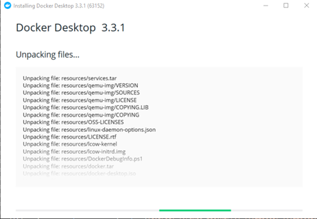
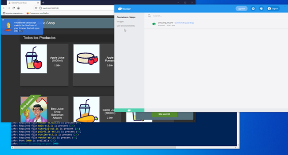

UD 2: Determinación del nivel de seguridad requerido por las aplicaciones
A.- Preparando el entorno
Instalando la aplicación a evaluar
Es posible instalar desde 0 en una máquina real o en una virtual todo lo necesario para su funcionamiento, aunque para la práctica se opta por el uso de una imagen para Docker ya instalada y configurada, no siendo el objetivo de la unidad no es la instalación de entornos web.
Existen otras posibilidades como el uso de Heroku (servicio de computación en la Nube), Vagrant (herramienta para creación y configuración de entornos de desarrollo virtualizados), Amazon AWS, Azure o Google Compute Engine. Se puede profundizar en los diferentes métodos de instalación en la URL https://bkimminich.gitbooks.io/pwning-owasp-juice-shop/content/part1/running.html.
Para instalar Docker en Windows ir a la web: https://docs.docker.com/docker-for-windows/install/ descargar el ejecutable e instalar siguiendo los pasos.

Puede ser necesario instalar un subsistema para el kernel de Linux que permite ejecutar aplicaciones Linux en Windows (WSL2)
Descargar la imagen de Juice Shop con el comando:
docker pull bkimminich/juice-shop
Y arrancar el contenedor con:
docker run --rm -p 3000:3000 bkimminich/juice-shop
Ahora para acceder a la web introducir en el navegador la dirección:
Nota: Lo anterior se puede realizar también desde las diferentes interfaces gráficas que existen para Docker.

Herramienta de evaluación del banco Santander con OWASP Application Security Verification Standard (ASVS) Web App
El proceso de evaluación de una aplicación no es sencillo, se han de realizar múltiples pruebas, evaluar los resultados, modificar el código y volver a reevaluar entre otras muchas tareas. Esta evaluación puede realizarse de forma manual aunque lo ideal es informatizar y automatizar el proceso lo máximo posible.
La seguridad informática es importante para cualquier sector, pero en el bancario es un elemento clave del mismo, el banco Santander ha desarrollado una aplicación basada en ASVS para la evaluación del nivel de seguridad de las aplicaciones web. Al igual que la aplicación anterior, es posible crearla desde 0, aunque facilita una imagen en docker para un fácil uso.
Para saber más: Repositorio de Santander en GitHub con aplicaciones de seguridad basadas en proyecto OWASP como guiones ZAP u otras como evaluación de Cross-Origin Resource Sharing (CORS).
https://github.com/Santandersecurityresearch
El proceso de instalación se indica en la página, es necesario tener instalado git.
En primer lugar, clonar el repositorio:
https://github.com/Santandersecurityresearch/asvs.
Construir la imagen (es necesario disponer de una cuenta en Docker):
docker build -t asvs .
Iniciar la imagen:
docker run -d -p 8000:8000 asvs